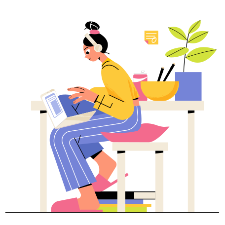

Accueil
Bonjour, je suis une développeuse débutante. Je recherche une formation certifiante en développement fullstack javascript. J'aimerai ensuite poursuivre avec une alternance.
Dans ce site vous trouverez aussi bientôt des informations sur d'autres lames de mon couteau-suisse : mes activités d'auteure, réalisatrice, productrice et monteuse de films.

by Julia Kuptsova from Ouch!